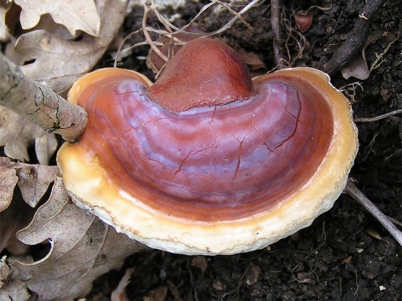
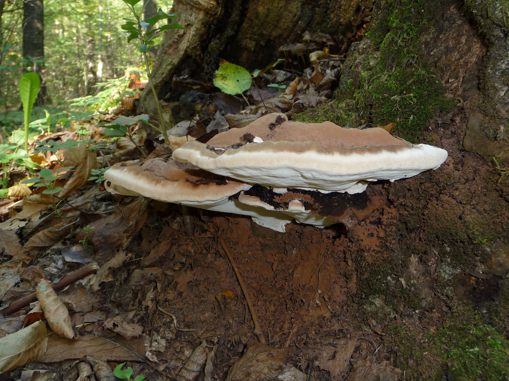
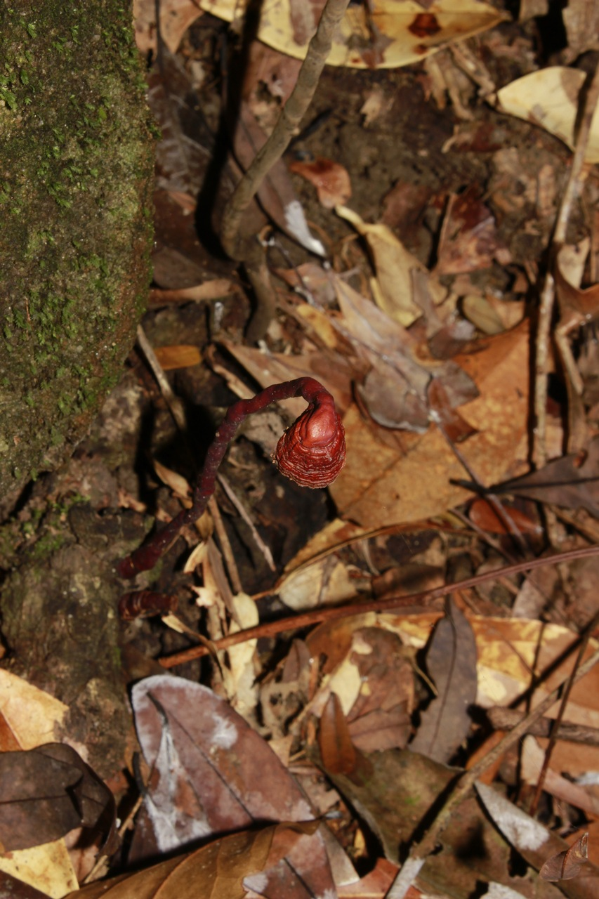
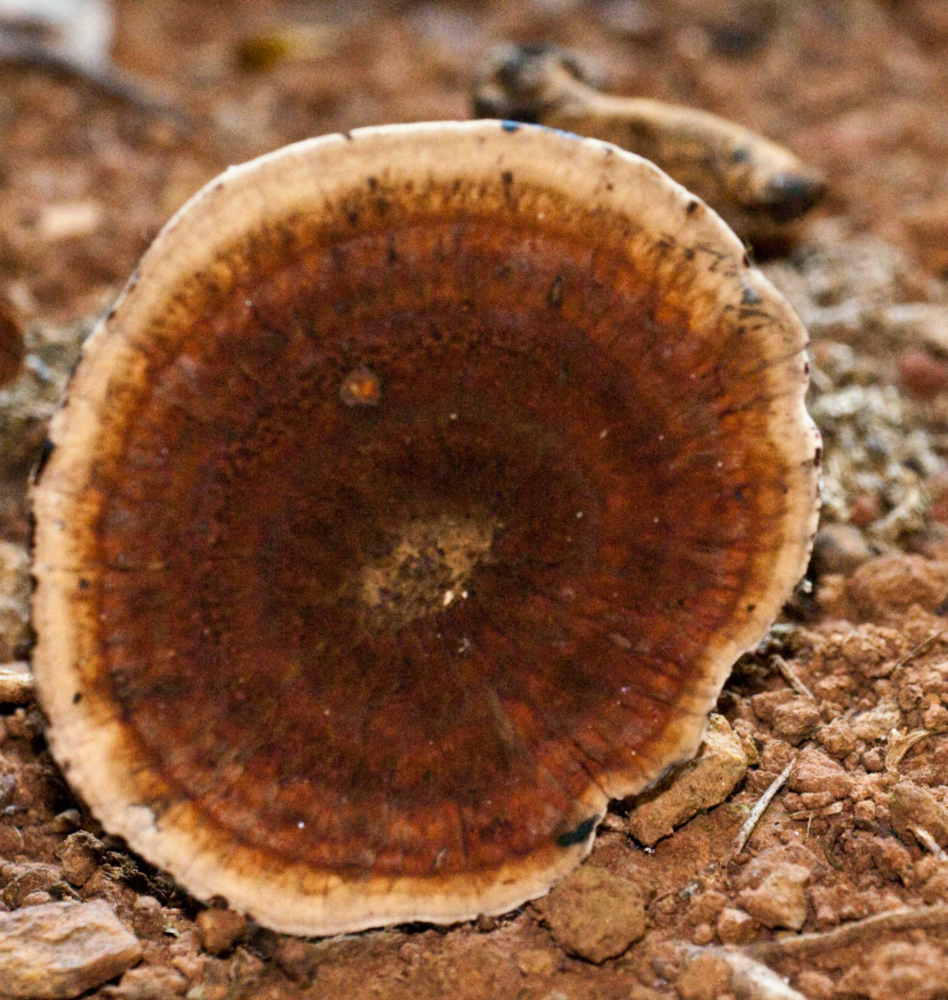

Ganodermataceae
ganoderma family
|  Ganoderma lucidum (varnished conk, often mistakenly called lingzhi/reishi) from Wikimedia Commons by Eric Steinert, CC BY-SA 3.0 |
 Ganoderma applanatum (artist's conk) from Wikimedia Commons by George Chernilevsky - Own work, Public Domain |
|  Haddowia longipes from Wikimedia Commons by Ngo Thi Thuy Dung (DungThuy), CC BY-SA 3.0 |
 Amauroderma rude from Wikimedia Commons by Ian Dodd, CC BY-SA 3.0 |
{kind=link}
{kind=link}
{kind=link}
{kind=link}
botanical characteristics
"Species diversity, systematic revision and molecular phylogeny of Ganodermataceae", Studies in Mycology
- double-walled basidiospores with ornamented endospore walls are the characteristic features of this family
- great variability in the macroscopic characters of the basidiomata and the relatively uniform macroand micro-morphology of most species in Ganodermataceae have resulted in much confusion in taxonomy
"Ganodermataceae", Wikipedia
- inner wall is verruculose (with moderate-sized growths) to ornamented, thickened and usually coloured, while the outer wall is thin and hyaline
distribution
"Species diversity, systematic revision and molecular phylogeny of Ganodermataceae", Studies in Mycology
- 14 accepted genera and 278 species worldwide
- Ganoderma is the largest genus in Ganodermataceae as of 2021 with 181 species
"A Nomenclatural Study of the Ganodermataceae Donk", Fungiflora
- cosmopolitan distribution
- initially, high species variability was reported in central Africa, southeast Asia, and neotropics but later classifications showed existence of pantropical species
ecological roles
"Species diversity, systematic revision and molecular phylogeny of Ganodermataceae", Studies in Mycology
- many members are wood-decay fungi
- tree pathogens such as Ganoderma boninense can cause a basal stem rot on oil palm trees, and G. philippii can cause a red root rot on Acacia mangium
common pharmacological constituents
"Chemical Components of Ganoderma", PubMed
- over 600 compounds have been isolated and identified from the genus Ganoderma
- triterpenes, meroterpenoids, steroids, alkaloids, nucleosides, nucleobases, and polysaccharides, in which triterpenes were the main compounds, with more than 300 triterpenes obtained
patterns in medicinal actions
"Ganoderma applanatum", Wikipedia | "Ganoderma sinense", Wikipedia | "Lingzhi (mushroom)", Wikipedia | "Ganoderma tsugae", Wikipedia
- antitumor/anticancer/antioxidant
- immune system support
- antibiotic
- regulating metabolism and normalizing organ function
- support for the whole body (i.e., multiple organ systems, incl. nervous, endocrine, immune, digestive, respiratory, cardiovascular, reproductive, integumentary)
traditional/cultural uses
"Ganoderma", Wikipedia
- for centuries, Ganoderma species have been used in traditional medicine in many parts of Asia
- these species are often mislabeled as G. lucidum, although genetic testing has shown this to be multiple species such as G. sichuanense (=G. lingzhi), and G. multipileum
- some species have enzymes that allow them to break down wood components, such as lignin and cellulose
- there has been significant research interest on the wood-degrading enzymes of Ganoderma species for industrial applications, such as biopulping and bioremediation
"Ganoderma applanatum", Wikipedia
- when the fresh white pore surface is rubbed or scratched with a sharp implement, dark brown tissue under the pores is revealed, resulting in visible lines and shading that become permanent once the fungus is dried
- has been used to produce amadou, a material for fire-starting
warnings
- no specific warnings
- always have a positive identification before wildcrafting/foraging mushrooms
extra information
"Species diversity, systematic revision and molecular phylogeny of Ganodermataceae", Studies in Mycology
- Ganodermataceae is a large and complex family and although many studies have focused on Ganodermataceae, the species diversity, geographic distribution, species classification, taxonomy and phylogeny of Ganodermataceae remains uncertain
prominent genera
- Amauroderma
- Ganoderma
- Haddowia
- Humphreya
- Tomophagus
- Trachyderma
plant highlights
see list of materia medica entries here
sources
"Ganoderma" on Wikipedia. Retrieved 26 August 2025.
"Ganoderma applanatum" on Wikipedia. Retrieved 26 August 2025.
"Ganoderma sinense" on Wikipedia. Retrieved 26 August 2025.
"Ganoderma tsugae" on Wikipedia. Retrieved 26 August 2025.
"Ganodermataceae" on Wikipedia. Retrieved 26 August 2025.
Goldberg Blackthorn, Samantha. Ace of Cups Herbal Medicine and Botanical Magic Herbal School (2024)
Gong, Ting, Renyi Yan, Jie Kang, and Ruoyun Chen. "Chemical Components of Ganoderma" (2019) on PubMed. Retrieved 26 August 2025.
"Lingzhi (mushroom)" on Wikipedia. Retrieved 26 August 2025.
Moncalvo, J.-M. and L. Ryvarden. "A Nomenclatural Study of the Ganodermataceae Donk" (1997) on Fungiflora. Retrieved 26 August 2025.
Sun, Y.-F., J.-H. Xing, X.-L. He, D.-M., C.-G. Song, S. Liu, J. Vlasák, G. Gates, T.B. Gibertoni, and B.-K. Cui. "Species diversity, systematic revision and molecular phylogeny of Ganodermataceae (Polyporales, Basidiomycota) with an emphasis on Chinese collections" (2022) on Studies in Mycology. Retrieved 26 August 2025.